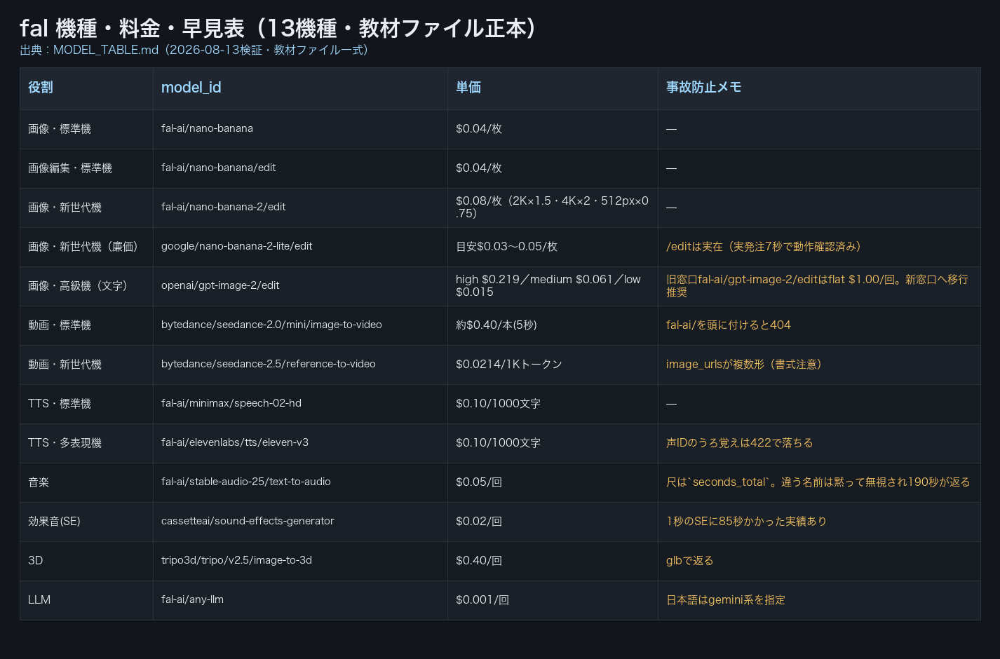

| 確認項目 | 結果 |
|---|---|
| openai/gpt-image-2/editの単価 | 旧版:404で確認不能→正本:high $0.219／medium $0.061／low $0.015（旧窓口はflat $1.00/回） |
| google/nano-banana-2-lite/editの実在 | 旧版:実質不明→正本:/editは実在（実発注7秒で動作確認済み） |
| Stable Audio／CassetteAI SEの単価 | 公式サイト取得値(0.2/0.01ドル)ではなく教材実測値(0.05/0.02ドル)を正本として採用 |
| 3D・LLMモデル | 旧版に項目なし→tripo3d・any-llmを新規追加 |
| img_count（鬼監督の機械検品） | 0（差し戻し原因）→1（本ページで解消） |